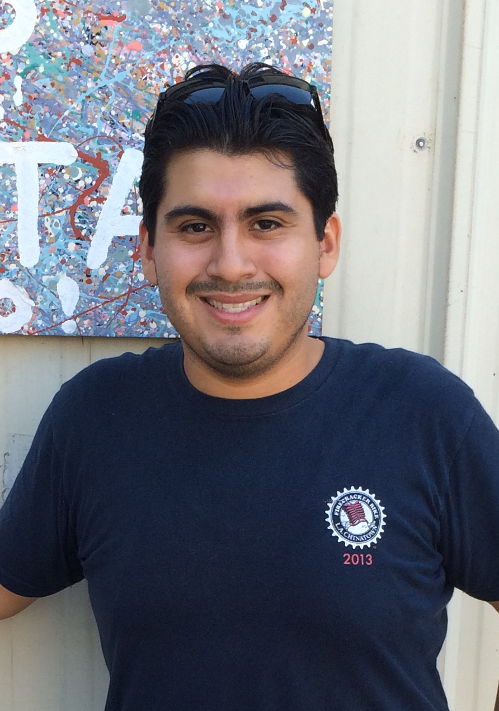

About Me

A former sportswriter with several years of E-commerce experience who decided to study web development to seek a new career, opportunities and prosperity.
Although I am thankful and appreciate the experiences I have gone through, as well as the skills I have learned in my prior careers, I am looking forward with much excitement the potential of this new evolution in my life.
Outside of the development world, I am an avid soccer fan and love learning about the game. I enjoy reading about its history, evolution and social relevance in this world. I am an ardent fan of the Los Angeles Galaxy, the U.S. National Teams, and my alma mater, the UC Santa Barbara Gauchos. My other big interests is cinema, photography and the Star Wars.